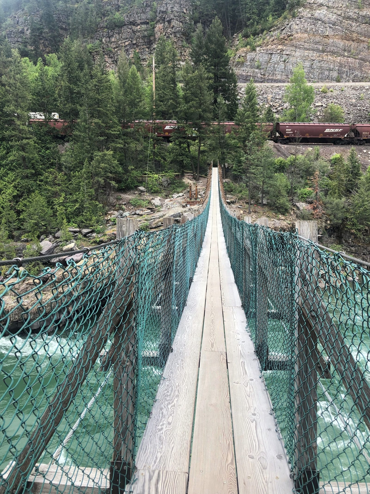

Starline Adventures is a Suspension Bridge manufacturer in India, providing custom-designed rope and walkway bridge systems for adventure parks, resorts, eco-tourism projects, nature trails and tourism destinations. Suspension Bridges can be customized according to the required length, width, site terrain, visitor capacity and project configuration. We provide design, manufacturing, supply, installation and project support across India.
What is a Suspension Bridge?
A Suspension Bridge is a pedestrian bridge supported by suspension cables, ropes or other structural systems, with a walkway designed for people to cross between two points. Adventure and tourism Suspension Bridges can be developed across streams, valleys, landscaped areas, forest trails and other suitable locations.
The structural configuration, walkway material, support system and safety features depend on the site and approved engineering design.
Suspension Bridge Manufacturing & Installation
Starline Adventures provides comprehensive manufacturing and installation services tailored to each project's approved engineering specifications. Starline can provide:
- Structural support frames
- Galvanized steel wire ropes
- Suspension/support cables
- Mild steel anchor frames
- Wooden or composite decking
- Wire protection mesh
- Thimbles
- Turnbuckles
- U-clamps
- Handrails/side protection where applicable
- Anchorage systems
- Site installation
- Commissioning
- Maintenance support
Only components included in the actual approved project scope and engineering design are fabricated and integrated on-site.
Suspension Bridge Design & Engineering
Our design and engineering process focuses on structural feasibility, landscape integration, and pedestrian comfort. The bridge can be designed according to:
- Required bridge length
- Walkway width
- Site terrain and natural contours
- River, stream, or valley crossing geometry
- Visitor capacity and expected pedestrian movement
- Structural support locations and clearance heights
- Foundation and anchoring requirements
- Wind conditions and aerodynamic response
- Environmental conditions and weathering factors
- Material selection for structural cables and frames
- Decking requirements (treated wood or composite)
Final structural dimensions, cable arrangement, anchoring system and foundation requirements are determined according to site conditions and the approved engineering design.
Suspension Bridge Technical Specifications
The following table outlines the general technical and operational parameters considered for pedestrian suspension bridges:
| Age Group | All age groups, subject to project operating rules |
|---|---|
| Installation Type | Outdoor Landscape / River Crossing |
| Capacity | 50–80 persons simultaneously, depending on final design |
| Length | 50 ft to 500 ft |
| Width | Approximately 6 ft |
| Materials & Components | Galvanized steel wire ropes, U-clamps, mild steel anchor frames, weather-treated wooden/composite decking planks, wire protection mesh, thimbles and turnbuckles. |
Technical specifications may vary according to bridge length, site conditions, structural design, visitor capacity and project requirements.
Types of Suspension Bridges We Manufacture
Starline Adventures manufactures a range of pedestrian and adventure bridge configurations to match diverse terrain and recreation environments:
Adventure Suspension Bridge
An exhilarating swaying suspension walkway designed for adventure parks, offering guests an active crossing experience with high-tension safety cables and secure side mesh.
Rope Suspension Bridge
A classic rope-and-plank walkway utilizing specialized wire ropes and durable decking, popular for eco-trails, obstacle zones, and nature retreats.
Pedestrian Suspension Bridge
A stable, comfortable pedestrian crossing engineered for resorts, public gardens, and tourism projects facilitating smooth two-way guest movement.
River Crossing Suspension Bridge
Engineered to span natural rivers, streams, and seasonal watercourses, connecting park sections while maintaining required seasonal high-water flood clearance.
Valley Suspension Bridge
A dramatic high-span suspension walkway crossing natural valleys, ravines, or rocky canyons, providing scenic viewpoints and memorable panoramic vistas.
Forest/Nature Trail Suspension Bridge
An eco-sensitive walkway elevated through tree canopies or forest corridors, minimizing ground disturbance and enhancing wildlife observation.
Resort Suspension Bridge
An architectural pedestrian feature linking resort villas, dining areas, and leisure zones over lakes, streams, or landscaped gardens.
Custom Suspension Bridge
Tailored structural configurations engineered for specific architectural concepts, curved alignments, or unique terrain constraints.
The final structural configuration depends on the site and engineering design, ensuring appropriate structural behavior and landscape integration.
Suspension Bridge Length, Width & Custom Design
Starline Adventures can develop Suspension Bridge configurations from approximately 50 ft to 500 ft in length, subject to site conditions and engineering feasibility. Bridge width can also be customized according to the intended pedestrian flow and project requirements.
The final achievable span, walkway width, and deck height depend on several key factors:
- Site survey and topographical elevation profile
- Support locations and abutment stability
- Foundation and rock anchor conditions on both sides
- Expected visitor capacity and peak pedestrian flow
- Structural design and cable tension requirements
- Local environmental conditions, wind exposure, and weather factors
Suspension Bridge Price & Cost in India
The price of a Suspension Bridge in India depends on factors such as bridge length, width, height, structural support system, cable quantity, decking material, foundation requirements, site accessibility, installation conditions and project location.
Since each Suspension Bridge is designed according to the site and project requirements, Starline Adventures provides project-specific pricing instead of a single fixed price.
For an accurate quotation, share the required bridge length and width, project location, site photographs or drawings and intended application.
Get Suspension Bridge Price & Project Quote
Share your site location, required bridge length and project requirements with Starline Adventures for a customized Suspension Bridge design, quotation and installation plan.
Suspension Bridge Decking Options
The walking surface of a suspension bridge directly influences visitor experience, aesthetics, and longevity. Starline Adventures supplies project-specific decking solutions including:
- Treated wooden decking: Seasoned, weather-treated hardwood or timber planks treated with anti-rot and anti-fungal preservatives for a natural rustic appearance in forest and nature settings.
- Composite decking: High-durability wood-plastic composite (WPC) planks that provide weather resistance, minimal maintenance, and consistent anti-slip texture under heavy outdoor exposure.
- Other project-specific walkway materials: Engineered steel grating, perforated metal walkway panels, or hybrid configurations specified for specific commercial requirements.
The selection of decking material depends on outdoor weather exposure, expected visitor traffic density, maintenance requirements, structural dead-load calculations, and overall project aesthetics.
Suspension Bridge Safety Systems
Suspension bridge safety relies on engineered load distribution, sound component selection, and structural redundancy. Applicable safety systems include:
- Structural suspension cables engineered for calculated tension and tensile loads
- Deep concrete anchor systems and mild steel anchor frames
- High-tensile side protection wire mesh to prevent accidental slips or falls
- Continuous handrails and guardrails where applicable for visitor balance
- Redundant safety ropes and stabilization cables to dampen lateral sway
- Proper cable termination using heavy-duty thimbles and tiger U-clamps
- Turnbuckles for accurate cable tensioning and periodic adjustment
- Routine structural inspection procedures and torque verification
- Appropriate load-path design transferring visitor weight effectively to foundation anchor points
Suspension Bridge Manufacturing Process
Starline Adventures executes an organized end-to-end manufacturing process to ensure consistent fabrication quality and reliable site integration:
- Requirement discussion: Understanding the project concept, purpose, required length, visitor flow, and aesthetic goals.
- Site information collection: Gathering topographical maps, coordinates, site photos, soil details, and span requirements.
- Preliminary concept: Developing layout drawings, elevation profiles, and walkway width proposals.
- Structural design: Engineering cable loads, anchor reactions, truss framing, and support tower calculations.
- Material selection: Sourcing high-grade structural steel, galvanized wire ropes, and decking materials.
- Steel fabrication: Cutting, welding, and framing anchor structures and support towers in our facility.
- Cable preparation: Measuring, cutting, socketing, and preparing wire ropes with required end fittings.
- Decking preparation: Sizing, pre-drilling, and protective treatment of wooden or composite planks.
- Surface protection/finishing: Applying anti-corrosive primers, coatings, or galvanization for outdoor weather resilience.
- Component inspection: Inspecting welds, dimensions, hardware, clamps, turnbuckles, and safety mesh.
- Pre-dispatch preparation: Packing, labeling, and coordinating logistics for safe transit to the project site.
- Site installation: Erecting structural towers, placing anchor frames, tensioning main cables, and laying decking.
- Final inspection and commissioning: Verifying cable tensions, handrails, alignments, and conducting operational handover.
Suspension Bridge Installation & Commissioning
Proper on-site installation is vital for suspension bridge stability and long-term durability. Our experienced field crew manages the complete installation sequence:
- Site assessment: Verifying site boundary lines, approach terrain, and anchor coordinates.
- Foundation/anchor preparation: Civil coordination for concrete anchor blocks and structural foundations.
- Anchor frame installation: Securing mild steel anchor frames into cured foundation footings.
- Structural support erection: Assembling and raising support towers and entry portals.
- Main cable installation: Pulling, stringing, and anchoring main load-bearing wire ropes.
- Suspension cable installation: Attaching vertical hangers and suspenders at calculated spacing.
- Decking installation: Securing wooden or composite walkway planks with corrosion-resistant fasteners.
- Side protection installation: Tensioning side safety wire mesh and rigid handrails.
- Final adjustment: Fine-tuning turnbuckles to achieve proper deck profile and sag geometry.
- Inspection: Comprehensive structural checklist review and fastener torque verification.
- Commissioning: Formal handover and operational walkthrough with the client's management team.
Suspension Bridge Applications
Commercial suspension bridges serve diverse recreational, aesthetic, and functional purposes across outdoor destinations:
Suspension Bridge for Tourism & Resort Projects
In tourism developments, eco-resorts, and nature reserves, a suspension bridge is far more than simple transit—it becomes a signature guest experience. Suspension bridges can be used as:
- Scenic walking attractions: Giving visitors an immersive pedestrian journey high above natural ravines or waterways.
- Nature trail connections: Linking disconnected hiking paths, viewpoints, and activity zones without altering sensitive topography.
- River/stream crossings: Enabling all-weather crossing over creeks and seasonal water bodies.
- Adventure activities: Providing guests with a mild, exciting swaying sensation that complements other outdoor rides.
- Resort attractions: Serving as picturesque focal points for photography, leisure strolls, and guest engagement.
- Eco-tourism infrastructure: Blending with natural surroundings while protecting delicate undergrowth beneath.
- Forest and wildlife visitor experiences: Elevating visitors into tree canopies for bird watching and scenic contemplation.
Site feasibility studies, environmental permissions, geotechnical surveys, and structural engineering assessments should be completed prior to construction.
Suspension Bridge Projects in India
Starline Adventures has manufactured and installed suspension walkway bridges for prominent nature reserves and governmental forestry projects in India:
Pench Tiger Reserve
📍 Madhya Pradesh
Eco-sensitive canopy suspension walkway and wildlife observation crossing.
Forest Department Khandwa
📍 Khandwa, Madhya Pradesh
Nature reserve hanging bridge across natural stream with anti-rot timber decking.
Why Choose Starline Adventures for Suspension Bridge Projects?
Starline Adventures delivers dependable pedestrian bridge infrastructure through focused engineering and dedicated execution:
- Adventure infrastructure manufacturer: Established manufacturing setup with dedicated steel fabrication facilities.
- Custom Suspension Bridge design: Engineering bridges specifically adapted to unique natural topographies and site geometries.
- In-house fabrication capability: Full control over cutting, welding, drilling, surface coatings, and component assembly.
- Project-specific configuration: Customized dimensions, cable layouts, decking materials, and barrier heights.
- Structural and activity integration: Ability to integrate bridges seamlessly with adventure towers, zip lines, and nature trails.
- Supply and installation support: Comprehensive dispatch logistics and dedicated on-site installation teams.
- Pan-India project support: Experience executing projects across multiple states, terrains, and climatic zones in India.
- Site/project consultation: Early-stage guidance on alignment, anchor placement, and civil coordination.
- Maintenance and after-sales support: Guidelines for regular inspection, cable tensioning, and component maintenance.
Explore Related Adventure Infrastructure
- Combine your bridge with a complete Rope Course layout for active guest challenges.
- Add high-capacity vertical climbing via our commercial Net Climbing systems.
- Challenge visitors with engineered artificial Climbing Wall installations.
- Connect viewpoints and valleys with a high-speed commercial Zipline system.
- Anchor your adventure park with an engineered Multi Activity Tower.
- Create a premier glass skywalk attraction with our custom Glass Bridge solutions.
Suspension Bridge Warranty & Maintenance Support
Warranty and maintenance terms are provided according to the final quotation and project agreement.
Periodic inspection and maintenance should follow the project's operating and engineering requirements. Regular maintenance typically includes checking cable tensions, verifying torque on U-clamps and fasteners, inspecting anchor points, and treating wooden decking planks for long-term weather resistance.
Frequently Asked Questions About Suspension Bridges
What is a Suspension Bridge?
A Suspension Bridge is a pedestrian bridge supported by suspension cables, ropes or other structural systems, with a walkway designed for people to cross between two points. Adventure and tourism Suspension Bridges can be developed across streams, valleys, landscaped areas, forest trails and other suitable locations. The structural configuration, walkway material, support system and safety features depend on the site and approved engineering design.
Does Starline Adventures manufacture Suspension Bridges in India?
Yes, Starline Adventures is a Suspension Bridge manufacturer based in India. We design, fabricate, supply and install custom pedestrian suspension bridges, rope bridges and walkway crossings for clients nationwide.
How much does a Suspension Bridge cost in India?
The price of a Suspension Bridge in India depends on factors such as bridge length, width, height, structural support system, cable quantity, decking material, foundation requirements, site accessibility, installation conditions and project location. Since each bridge is customized to site conditions, Starline Adventures provides project-specific quotations based on site dimensions and engineering requirements.
What length can a Suspension Bridge be?
Starline Adventures can develop Suspension Bridge configurations from approximately 50 ft to 500 ft in length, subject to site conditions, topography, foundation anchors and engineering feasibility.
Can the bridge width be customized?
Yes. Bridge width is commonly designed around 6 ft for comfortable pedestrian traffic, but it can be customized according to expected visitor flow, two-way movement requirements and project layout.
Can a Suspension Bridge be installed across a river or stream?
Yes, river and stream crossings are among the most common applications for pedestrian suspension bridges. Starline Adventures designs anchor frames and structural towers suited for natural watercourses and flood clearances.
Can Suspension Bridges be installed at resorts?
Yes. Suspension bridges are widely installed at luxury resorts, eco-resorts and retreat properties as scenic nature walkways, valley crossovers, and memorable guest attractions.
What materials are used to manufacture a Suspension Bridge?
Materials typically include galvanized steel wire ropes, mild steel anchor frames, weather-treated wooden or composite decking planks, wire protection mesh, tiger U-clamps, thimbles, turnbuckles and protective coatings.
Does Starline provide Suspension Bridge installation?
Yes. Starline Adventures provides complete on-site installation support across India, including anchor foundation coordination, cable rigging, decking assembly, safety mesh tensioning and project commissioning.
Can a Suspension Bridge be customized according to the site?
Yes. Every suspension bridge is site-specific. We adapt the bridge alignment, anchor positions, cable tensions, walkway material and handrail configurations to match the natural landscape.
How many people can use a Suspension Bridge?
Visitor capacity depends on the span, walkway width, structural cable system and approved engineering design. Standard configurations are often planned for 50 to 80 persons simultaneously, subject to specific project engineering.
What information is required for a Suspension Bridge quotation?
We generally require the project location, approximate bridge length and width, site photographs or drawings, intended application, expected visitor capacity and available access information. These details help us evaluate the project and prepare a suitable concept and quotation.